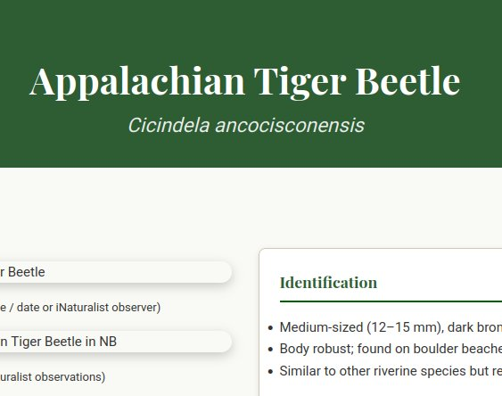
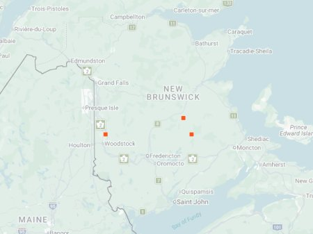

Appalachian Tiger Beetle (photo: your name / date or iNaturalist observer)

Distribution map (based on iNaturalist observations)
Identification
- Medium-sized (12–15 mm), dark bronze with white maculations (often reduced).
- Body robust; found on boulder beaches and river cobble.
- Similar to other riverine species but restricted to Appalachian regions.
Habitat in New Brunswick
Boulder and cobble river beaches, rocky riverbanks, and gravel bars. Prefers fast-flowing rivers with minimal sand.
Flight Season in NB
April to September (spring-fall; peaks May-July).
Distribution & Notes
Restricted to Appalachian regions of NB; uncommon. Good indicator of clean, rocky river habitats.